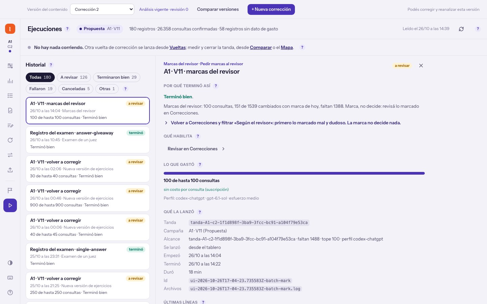

Las 100 marcas que pediste desde Correcciones, leídas una por una.
Las 100 marcas tardaron 18 minutos. De las 44 marcadas, 20 son defectos reales; casi todo el resto sale de dos cosas que el revisor no sabe: conviene enseñárselas antes de pedir las 1.388.
Los 44 que marcó mal o dudoso, ejercicio por ejercicio. Costó 100 consultas por suscripción.
Revisé además los 420 cambios que sacaron «Usa short forms»: con el corrector del 30/9, ninguno rechaza una respuesta buena.
| Caso | Producción | Ahora | El revisor | Yo |
|---|---|---|---|---|
| 25be$Be$: preguntas $yes / no$ | Consigna: Usa $short forms$ si es posible. Conjuga el verbo 'ser/estar' en presente simple. Ejercicio: We ___ (not / be) real. Opciones: (no es de opción múltiple) Respuestas: Hueco 1: aren't Traducción: No somos reales. Miniteoría: $'m$ con I, $'s$ con he/she/it, $'re$ con you/we/they. Negativo: $isn't$, $aren't$. | Consigna: Conjuga el verbo 'ser/estar' en presente simple. Ejercicio: We ___ (not / be) real. Opciones: (no es de opción múltiple) Respuestas: Hueco 1: aren't | are not | 're not | ain't Traducción: No somos reales. Miniteoría: Con we usamos are. Para negar, agregamos not: $We are not$. Podemos contraer are not: $We aren't$, o we are: $We're not$. Como We ya está escrito, en el hueco aceptamos $are not$, $aren't$ y $'re not$. También aceptamos $ain't$, una forma informal de negar que no pertenece al inglés estándar. | malAceptar are not y 're not amplía correctamente las respuestas de producción, pero incorporar ain't empeora el ejercicio para esta práctica de inglés estándar. Además, persiste la falta de correspondencia con el tema y la miniteoría ahora incluye instrucciones específicas sobre el hueco.· respuestas «ain't»: Se incorpora una forma no estándar como respuesta válida en una práctica A1 del presente simple de be.· miniteoría «Como We ya está escrito, en el hueco aceptamos $are not$, $aren't$ y $'re not$.»: La explicación deja de presentar una regla general y pasa a enumerar las respuestas de este ejercicio.· ejercicio «We ___ (not / be) real.»: Sigue practicando una afirmación negativa, aunque el tema pide preguntas yes / no con be. | malDe acuerdo: acepta y enseña «ain't» en A1. Sumar «are not» y «'re not» sí estaba bien. |
| 1eebPreguntas sí/no | Consigna: Formula preguntas en presente simple. Ejercicio: ___ (you / like) people? Opciones: (no es de opción múltiple) Respuestas: Hueco 1: Do you like Traducción: ¿Te gusta la gente? Miniteoría: $Do$ o $Does$ adelante y el verbo en forma base: $Does he read$ … ? | Consigna: Formula preguntas en presente simple. Ejercicio: ___ (Do / you / like) people? Opciones: (no es de opción múltiple) Respuestas: Hueco 1: Do you like Traducción: ¿Te gusta la gente? Miniteoría: Para hacer una pregunta en presente simple con $you$, usá $Do + you + verbo en forma base$: $Do you like people?$ | malEn producción, el alumno debía elegir y agregar el auxiliar para formar la pregunta. Ahora recibe «Do» entre las palabras y sólo necesita ordenarlas, por lo que se pierde la decisión que practica el tema.· ejercicio «___ (Do / you / like) people?»: El auxiliar «Do» ya está dado, aunque elegir entre «do» y «does» es lo que pide practicar el tema. | malDe acuerdo: la pista trae «Do», y elegir entre do y does es lo que practica el tema. |
| 1e9bPreguntas $wh$ con $be$ | Consigna: Formula una pregunta 'wh' en presente simple usando el verbo 'be'. Ejercicio: How ___ ? (She) Opciones: (no es de opción múltiple) Respuestas: Hueco 1: is she Traducción: ¿Cómo está ella? Miniteoría: La palabra wh- primero y después be + sujeto: $Where is he$? | Consigna: Formula una pregunta 'wh' en presente simple usando el verbo 'be'. Ejercicio: How ___ she? (be) Opciones: (no es de opción múltiple) Respuestas: Hueco 1: is Traducción: ¿Cómo está ella? Miniteoría: Con she, be toma la forma is. Para esta pregunta: $How + is + she$? | dudosoEl ejercicio sigue siendo correcto y coincide con la traducción y la respuesta aceptada. Sin embargo, la miniteoría de producción explicaba el orden general wh + be + sujeto; ahora se limita a la conjugación con she y a resolver esta pregunta.· miniteoría «Para esta pregunta: $How + is + she$?»: Reemplaza la regla general sobre el orden de las preguntas wh con be por el esquema de resolución de este ejercicio. | malPeor de lo que dice: con «she» escrito ya no practica el orden wh- + be + sujeto, que es el tema. Para mí, mal. |
| 25ad$Be$: preguntas $yes / no$ | Consigna: Usa $short forms$ si es posible. Conjuga el verbo 'ser/estar' en presente simple. Ejercicio: She ___ (be) at the store. Opciones: (no es de opción múltiple) Respuestas: Hueco 1: 's Traducción: Ella está en la tienda. Miniteoría: $'m$ con I, $'s$ con he/she/it, $'re$ con you/we/they. Negativo: $isn't$, $aren't$. | Consigna: Conjuga el verbo 'ser/estar' en presente simple. Ejercicio: She ___ (be) at the store. Opciones: (no es de opción múltiple) Respuestas: Hueco 1: 's Traducción: Ella está en la tienda. Miniteoría: Con she usamos is. Podemos contraer $She is$ como $She's$. Como She ya está escrito antes del hueco, completamos con $'s$. | malAl quitar la indicación de usar contracciones sin ampliar las respuestas aceptadas, ahora se rechaza is aunque cumple la consigna. Además, la miniteoría incorpora una orden específica para el hueco y persiste la falta de correspondencia con el tema de preguntas yes / no.· respuestas «Hueco 1: 's»: Sólo acepta la contracción y rechaza is, que es una respuesta correcta con la consigna actual.· miniteoría «Como She ya está escrito antes del hueco, completamos con $'s$.»: La explicación pasó a indicar qué escribir en este hueco en lugar de limitarse a explicar la regla.· ejercicio «She ___ (be) at the store.»: Es una afirmación y no practica las preguntas yes / no con be que pide el tema. | dudosoDudoso, no mal: el corrector acepta la forma larga desde el 30/9. Lo real es la miniteoría: que el sujeto esté escrito no obliga a contraer. |
| 25b6$Be$: preguntas $yes / no$ | Consigna: Usa $short forms$ si es posible. Conjuga el verbo 'ser/estar' en presente simple. Ejercicio: He ___ (be) always happy. Opciones: (no es de opción múltiple) Respuestas: Hueco 1: 's Traducción: Siempre está feliz. Miniteoría: $'m$ con I, $'s$ con he/she/it, $'re$ con you/we/they. Negativo: $isn't$, $aren't$. | Consigna: Conjuga el verbo 'ser/estar' en presente simple. Ejercicio: He ___ (be) always happy. Opciones: (no es de opción múltiple) Respuestas: Hueco 1: 's Traducción: Siempre está feliz. Miniteoría: Con he usamos is. Podemos contraer $He is$ como $He's$. Como He ya está escrito antes del hueco, completamos con $'s$. | malEmpeoró respecto de producción: al quitar la exigencia de usar contracciones, is pasa a ser una respuesta válida que el corrector no acepta. Además, la nueva miniteoría justifica incorrectamente la contracción obligatoria y persiste la falta de correspondencia con el tema.· consigna «Usa $short forms$ si es posible.»: Se eliminó la indicación de usar contracciones, pero el corrector sigue aceptando únicamente 's y rechaza is, que también es correcto.· miniteoría «Como He ya está escrito antes del hueco, completamos con $'s$.»: Que He esté escrito no obliga a contraer: también se puede completar con is; la explicación convierte la regla en una orden para este ejercicio.· ejercicio «He ___ (be) always happy.»: Es una afirmación y no practica las preguntas yes / no con be que pide el tema. | dudosoDudoso, no mal: el corrector acepta la forma larga desde el 30/9. Lo real es la miniteoría: que el sujeto esté escrito no obliga a contraer. |
| 25b7$Be$: preguntas $yes / no$ | Consigna: Usa $short forms$ si es posible. Conjuga el verbo 'ser/estar' en presente simple. Ejercicio: We ___ (be) tired. Opciones: (no es de opción múltiple) Respuestas: Hueco 1: 're Traducción: Estamos cansados. Miniteoría: $'m$ con I, $'s$ con he/she/it, $'re$ con you/we/they. Negativo: $isn't$, $aren't$. | Consigna: Conjuga el verbo 'ser/estar' en presente simple. Ejercicio: We ___ (be) tired. Opciones: (no es de opción múltiple) Respuestas: Hueco 1: 're Traducción: Estamos cansados. Miniteoría: Con we usamos are. Podemos contraer $We are$ como $We're$. Como We ya está escrito antes del hueco, completamos con $'re$. | malQuedó peor que en producción: al quitar la instrucción de usar contracciones, are pasa a ser una respuesta válida que el corrector no acepta. Además, la miniteoría indica la respuesta concreta y se mantiene la falta de correspondencia con el tema de preguntas yes / no.· consigna «Usa $short forms$ si es posible.»: Se eliminó la indicación de usar contracciones, pero el corrector sigue aceptando sólo 're y rechaza are, que también es correcto con la nueva consigna.· miniteoría «Como We ya está escrito antes del hueco, completamos con $'re$.»: La explicación pasa a indicar qué escribir en este hueco, en lugar de explicar una regla general.· ejercicio «We ___ (be) tired.»: La oración es afirmativa y no practica las preguntas yes / no con be que pide el tema. | dudosoDudoso, no mal: el corrector acepta la forma larga desde el 30/9. Lo real es la miniteoría: que el sujeto esté escrito no obliga a contraer. |
| 25b9$Be$: preguntas $yes / no$ | Consigna: Usa $short forms$ si es posible. Conjuga el verbo 'ser/estar' en presente simple. Ejercicio: They ___ (be) at the park today. Opciones: (no es de opción múltiple) Respuestas: Hueco 1: 're Traducción: Están en el parque hoy. Miniteoría: $'m$ con I, $'s$ con he/she/it, $'re$ con you/we/they. Negativo: $isn't$, $aren't$. | Consigna: Conjuga el verbo 'ser/estar' en presente simple. Ejercicio: They ___ (be) at the park today. Opciones: (no es de opción múltiple) Respuestas: Hueco 1: 're Traducción: Están en el parque hoy. Miniteoría: Con they usamos are. Podemos contraer $They are$ como $They're$. Como They ya está escrito antes del hueco, completamos con $'re$. | malEmpeoró respecto de producción: se eliminó la instrucción que justificaba exigir la contracción, pero no se agregó «are» a las respuestas aceptadas. Además, la miniteoría ahora dicta la respuesta y persiste la falta de correspondencia con el tema.· respuestas «'re»: Al quitar la indicación de usar contracciones, «are» también es una respuesta correcta, pero el corrector no la acepta.· miniteoría «Como They ya está escrito antes del hueco, completamos con $'re$.»: La explicación pasa a indicar qué escribir en este hueco; que el sujeto esté escrito no obliga a contraer el verbo.· ejercicio «They ___ (be) at the park today.»: La oración es afirmativa y no practica las preguntas yes / no con be que pide el tema. | dudosoDudoso, no mal: el corrector acepta la forma larga desde el 30/9. Lo real es la miniteoría: que el sujeto esté escrito no obliga a contraer. |
| 1e8b$Be$: preguntas $yes / no$ | Consigna: Elige el comienzo correcto de la pregunta 'yes / no' con el verbo 'be'. Ejercicio: ___ a student? (She) Opciones: am i / are we / are you / is he / is it / is she Respuestas: Opción correcta: is she Traducción: ¿Ella es estudiante? Miniteoría: Para preguntar, be pasa adelante del sujeto: $Is he$ … ?, $Are we$ … ? | Consigna: Elige el comienzo correcto de la pregunta 'yes / no' con el verbo 'be'. Ejercicio: ___ a student? (She) Opciones: Am I / Are we / Are you / Is he / Is it / Is she Respuestas: Opción correcta: Is she Traducción: ¿Ella es estudiante? Miniteoría: Para preguntar con she, usamos is antes del sujeto: $Is she$ … ? Con la pista (She), elegí $Is she$. | dudosoLa capitalización de las opciones mejora respecto de producción y la respuesta sigue siendo correcta. Sin embargo, la miniteoría reemplaza la explicación general de la inversión por una explicación limitada a she y una orden para resolver este caso.· miniteoría «Con la pista (She), elegí $Is she$.»: La miniteoría pasa de explicar una regla general a dar una orden con la respuesta de este ejercicio. | dudosoDe acuerdo: «Con la pista (She), elegí Is she» le dice qué elegir. |
| 25ac$Be$: preguntas $yes / no$ | Consigna: Usa $short forms$ si es posible. Conjuga el verbo 'ser/estar' en presente simple. Ejercicio: They ___ (not / be) from Ireland. Opciones: (no es de opción múltiple) Respuestas: Hueco 1: 're not Traducción: No son de Irlanda. Miniteoría: $'m$ con I, $'s$ con he/she/it, $'re$ con you/we/they. Negativo: $isn't$, $aren't$. | Consigna: Completa la pregunta de sí o no con el verbo $be$ en presente simple, colocando el verbo antes del sujeto indicado en la pista. Ejercicio: ___ (they / be) from Ireland? Opciones: (no es de opción múltiple) Respuestas: Hueco 1: Are they Traducción: ¿Son de Irlanda? Miniteoría: Con $they$ usamos $are$. Para preguntar: $Are they$ + complemento + ? | dudosoAhora practica preguntas de sí o no con be y los campos coinciden, corrigiendo el desajuste de producción con el tema. Sin embargo, la consigna adelanta la inversión entre verbo y sujeto que el alumno debe aprender a aplicar.· consigna «colocando el verbo antes del sujeto indicado en la pista»: La consigna indica el orden que el alumno debería decidir para formar la pregunta, que es justamente lo que practica el tema. | dudosoDe acuerdo: «colocando el verbo antes del sujeto» regala la inversión, como 21c9. |
| 25b0$Be$: preguntas $yes / no$ | Consigna: Usa $short forms$ si es posible. Conjuga el verbo 'ser/estar' en presente simple. Ejercicio: She ___ (not / be) British. Opciones: (no es de opción múltiple) Respuestas: Hueco 1: isn't Traducción: Ella no es británica. Miniteoría: $'m$ con I, $'s$ con he/she/it, $'re$ con you/we/they. Negativo: $isn't$, $aren't$. | Consigna: Conjuga el verbo 'ser/estar' en presente simple. Ejercicio: She ___ (not / be) British. Opciones: (no es de opción múltiple) Respuestas: Hueco 1: isn't | is not Traducción: Ella no es británica. Miniteoría: Con she usamos is. Para negar, ponemos not después de is: $She is not$. Podemos contraer is not como isn't: $She isn't$. En el hueco se puede escribir $is not$ o $isn't$. | dudosoEliminar la exigencia de contracción y aceptar ambas formas correctas es coherente. Sin embargo, persiste la falta de correspondencia con el tema y la miniteoría incorpora una indicación específica para resolver el hueco.· ejercicio «She ___ (not / be) British.»: Practica una oración negativa en lugar de las preguntas yes/no con be que pide el tema; este problema ya estaba en producción.· miniteoría «En el hueco se puede escribir $is not$ o $isn't$.»: La explicación termina indicando las respuestas de este ejercicio en vez de mantener una regla general. | dudosoLeve: «en el hueco se puede escribir … » habla del ejercicio, no de la regla. |
| 1eaePreguntas $wh$ con $be$ | Consigna: Formula una pregunta 'wh' en presente simple usando el verbo 'be'. Ejercicio: When ___ ? (She) Opciones: (no es de opción múltiple) Respuestas: Hueco 1: is she Traducción: ¿Cuándo es ella? Miniteoría: La palabra wh- primero y después be + sujeto: $Where is he$? | Consigna: Formula una pregunta 'wh' en presente simple usando el verbo 'be'. Ejercicio: When ___ with her husband? (She) Opciones: (no es de opción múltiple) Respuestas: Hueco 1: is she Traducción: ¿Cuándo está ella con su marido? Miniteoría: Con she, be toma la forma is. Para esta pregunta: $When + is + she + complemento$? | dudosoLa nueva oración tiene sentido y la traducción coincide, mejorando producción. Sin embargo, la miniteoría perdió la explicación general del orden wh + be + sujeto y pasó a indicar cómo armar esta pregunta concreta.· miniteoría «Para esta pregunta: $When + is + she + complemento$?»: Reemplaza la regla general de orden de las preguntas wh por una fórmula específica para resolver este ejercicio. | dudosoDe acuerdo: la miniteoría pasó a ser la receta de esta pregunta. |
| 1efaPreguntas sí/no | Consigna: Formula preguntas en presente simple. Ejercicio: ___ (they / drink) at home? Opciones: (no es de opción múltiple) Respuestas: Hueco 1: Do they drink Traducción: ¿Beben en casa? Miniteoría: $Do$ o $Does$ adelante y el verbo en forma base: $Does he read$ … ? | Consigna: Formula preguntas en presente simple. Ejercicio: ___ (they / drink) at home? Opciones: (no es de opción múltiple) Respuestas: Hueco 1: Do they drink Traducción: ¿Beben en casa? Miniteoría: Para hacer una pregunta en presente simple con $they$, usá $Do + they + verbo en forma base$. Con $they$ corresponde $Do$, y $drink$ queda sin cambios: $Do they drink at home?$ | dudosoEl ejercicio sigue siendo correcto y practica lo mismo que en producción. Sin embargo, la miniteoría reemplaza la regla general sobre ambos auxiliares por instrucciones y una resolución específicas para esta oración.· miniteoría «Con $they$ corresponde $Do$, y $drink$ queda sin cambios: $Do they drink at home?$»: La explicación se centra en resolver este ejercicio y pierde la regla general para elegir entre $do$ y $does$. | dudosoLeve, y no es parejo: diez hermanos con la misma miniteoría quedaron «bien». |
| Caso | Producción | Ahora | El revisor | Yo |
|---|---|---|---|---|
| 25ae$Be$: preguntas $yes / no$ | Consigna: Usa $short forms$ si es posible. Conjuga el verbo 'ser/estar' en presente simple. Ejercicio: He ___ (not / be) in the living-room. Opciones: (no es de opción múltiple) Respuestas: Hueco 1: isn't Traducción: Él no está en la sala. Miniteoría: $'m$ con I, $'s$ con he/she/it, $'re$ con you/we/they. Negativo: $isn't$, $aren't$. | Consigna: Conjuga el verbo 'ser/estar' en presente simple. Ejercicio: He ___ (not / be) in the living-room. Opciones: (no es de opción múltiple) Respuestas: Hueco 1: isn't Traducción: Él no está en la sala. Miniteoría: Con he usamos is. Para negar, ponemos not después de is: $He is not$. La contracción de $is not$ es $isn't$: $He isn't$. | malEmpeoró respecto de producción: se eliminó la exigencia de usar formas contraídas sin incorporar «is not» entre las respuestas aceptadas, aunque la nueva miniteoría enseña esa forma. Además, conserva la falta de correspondencia con el tema de preguntas yes/no.· respuestas «Hueco 1: isn't»: Al quitar la indicación de usar contracciones, «is not» también es una respuesta correcta, pero el corrector no la acepta.· ejercicio «He ___ (not / be) in the living-room.»: El ejercicio practica una afirmación negativa con be, aunque el tema pide preguntas yes/no. | dudosoDudoso por herencia, no mal: el corrector acepta «is not». Queda una negativa en un tema de preguntas yes / no, que ya estaba. |
| 1e97$Be$: preguntas $yes / no$ | Consigna: Elige el comienzo correcto de la pregunta 'yes / no' con el verbo 'be'. Ejercicio: ___ brown? (I) Opciones: am i / are we / are you / is he / is it / is she Respuestas: Opción correcta: am i Traducción: ¿Soy marrón? Miniteoría: Para preguntar, be pasa adelante del sujeto: $Is he$ … ?, $Are we$ … ? | Consigna: Elige el comienzo correcto de la pregunta 'yes / no' con el verbo 'be'. Ejercicio: ___ brown? (I) Opciones: Am I / Are we / Are you / Is he / Is it / Is she Respuestas: Opción correcta: Am I Traducción: ¿Soy marrón? Miniteoría: Con I usamos am. Para hacer una pregunta de sí o no, ponemos am antes de I: $I am$ → $Am I$ … ? La pista (I) indica que el sujeto es I. | dudosoLa capitalización mejora y la miniteoría explica correctamente la pregunta con I, pero se mantiene la falta de contexto de producción. Practica la forma del tema, aunque convendría usar un atributo más natural para preguntar por uno mismo.· ejercicio «___ brown? (I)»: La pregunta «Am I brown?» resulta poco natural sin un contexto que explique por qué alguien pregunta si es marrón. | dudosoDe acuerdo, heredado y leve: «Am I brown?» suena raro. |
| 25af$Be$: preguntas $yes / no$ | Consigna: Usa $short forms$ si es posible. Conjuga el verbo 'ser/estar' en presente simple. Ejercicio: Who ___ (they / be)? Opciones: (no es de opción múltiple) Respuestas: Hueco 1: are they Traducción: ¿Quiénes son? Miniteoría: Para preguntar, be va antes del sujeto: $Is$, $Are$ o $Am$. | Consigna: Conjuga el verbo 'ser/estar' en presente simple. Ejercicio: Who ___ (they / be)? Opciones: (no es de opción múltiple) Respuestas: Hueco 1: are they Traducción: ¿Quiénes son? Miniteoría: Para preguntar, be va antes del sujeto: $Is$, $Are$ o $Am$. | dudosoQuitar la indicación sobre short forms mejora la consigna, pero conserva el problema de producción: el ejercicio practica una pregunta con «Who» en un tema de preguntas yes / no.· ejercicio «Who ___ (they / be)?»: Es una pregunta con «Who», no una pregunta yes / no como pide el tema. | dudosoDe acuerdo, heredado: una pregunta con wh- en un tema de preguntas yes / no. Sacar «short forms» está bien. |
| 25b1$Be$: preguntas $yes / no$ | Consigna: Usa $short forms$ si es posible. Conjuga el verbo 'ser/estar' en presente simple. Ejercicio: Where ___ (my wallet / be)? Opciones: (no es de opción múltiple) Respuestas: Hueco 1: is my wallet Traducción: ¿Dónde está mi billetera? Miniteoría: Para preguntar, be va antes del sujeto: $Is$, $Are$ o $Am$. | Consigna: Conjuga el verbo 'ser/estar' en presente simple. Ejercicio: Where ___ (my wallet / be)? Opciones: (no es de opción múltiple) Respuestas: Hueco 1: is my wallet Traducción: ¿Dónde está mi billetera? Miniteoría: Para preguntar, be va antes del sujeto: $Is$, $Are$ o $Am$. | dudosoEliminar la indicación sobre short forms es adecuado, pero persiste el desajuste de producción: el ejercicio practica una pregunta con Where en un tema de preguntas yes / no.· ejercicio «Where ___ (my wallet / be)?»: Practica una pregunta con Where, cuya respuesta indica un lugar, aunque el tema pide preguntas yes / no. | dudosoDe acuerdo, heredado: una pregunta con wh- en un tema de preguntas yes / no. Sacar «short forms» está bien. |
| 25b4$Be$: preguntas $yes / no$ | Consigna: Usa $short forms$ si es posible. Conjuga el verbo 'ser/estar' en presente simple. Ejercicio: Why ___ (she / be) so late? Opciones: (no es de opción múltiple) Respuestas: Hueco 1: is she Traducción: ¿Por qué llega tan tarde? Miniteoría: Para preguntar, be va antes del sujeto: $Is$, $Are$ o $Am$. | Consigna: Conjuga el verbo 'ser/estar' en presente simple. Ejercicio: Why ___ (she / be) so late? Opciones: (no es de opción múltiple) Respuestas: Hueco 1: is she Traducción: ¿Por qué llega tan tarde? Miniteoría: Para preguntar, be va antes del sujeto: $Is$, $Are$ o $Am$. | dudosoEliminar la indicación sobre contracciones mejora la consigna, pero mantiene el desajuste de producción: el ejercicio practica una pregunta con Why en un tema de preguntas yes / no.· ejercicio «Why ___ (she / be) so late?»: La pregunta con Why practica una pregunta abierta, pero el tema pide preguntas yes / no. | dudosoDe acuerdo, heredado: una pregunta con wh- en un tema de preguntas yes / no. Sacar «short forms» está bien. |
| 25b5$Be$: preguntas $yes / no$ | Consigna: Usa $short forms$ si es posible. Conjuga el verbo 'ser/estar' en presente simple. Ejercicio: Where ___ (he / be) now? Opciones: (no es de opción múltiple) Respuestas: Hueco 1: is he Traducción: ¿Dónde está él ahora? Miniteoría: Para preguntar, be va antes del sujeto: $Is$, $Are$ o $Am$. | Consigna: Conjuga el verbo 'ser/estar' en presente simple. Ejercicio: Where ___ (he / be) now? Opciones: (no es de opción múltiple) Respuestas: Hueco 1: is he Traducción: ¿Dónde está él ahora? Miniteoría: Para preguntar, be va antes del sujeto: $Is$, $Are$ o $Am$. | dudosoQuitar la indicación de usar formas cortas mejora la consigna, pero conserva el problema de producción: el ejercicio practica una pregunta de ubicación en un tema de preguntas yes / no.· ejercicio «Where ___ (he / be) now?»: Es una pregunta con «Where», no una pregunta de sí o no como pide el tema. | dudosoDe acuerdo, heredado: una pregunta con wh- en un tema de preguntas yes / no. Sacar «short forms» está bien. |
| 25ba$Be$: preguntas $yes / no$ | Consigna: Usa $short forms$ si es posible. Conjuga el verbo 'ser/estar' en presente simple. Ejercicio: What ___ (you / be)? Opciones: (no es de opción múltiple) Respuestas: Hueco 1: are you Traducción: ¿Qué eres? Miniteoría: Para preguntar, be va antes del sujeto: $Is$, $Are$ o $Am$. | Consigna: Conjuga el verbo 'ser/estar' en presente simple. Ejercicio: What ___ (you / be)? Opciones: (no es de opción múltiple) Respuestas: Hueco 1: are you Traducción: ¿Qué eres? Miniteoría: Para preguntar, be va antes del sujeto: $Is$, $Are$ o $Am$. | dudosoQuitar la indicación de usar contracciones no perjudica el ejercicio, porque aquí no corresponde contraer «are you». Sin embargo, conserva el problema de producción: practica una pregunta con «What» en un tema de preguntas yes / no.· ejercicio «What ___ (you / be)?»: Es una pregunta abierta con «What», pero el tema pide practicar preguntas que se responden con sí o no. | dudosoDe acuerdo, heredado: una pregunta con wh- en un tema de preguntas yes / no. Sacar «short forms» está bien. |
| 1eeePreguntas sí/no | Consigna: Formula preguntas en presente simple. Ejercicio: ___ (you / eat) lunch every day? Opciones: (no es de opción múltiple) Respuestas: Hueco 1: Do you eat Traducción: ¿Comes el almuerzo todos los días? Miniteoría: $Do$ o $Does$ adelante y el verbo en forma base: $Does he read$ … ? | Consigna: Formula preguntas en presente simple. Ejercicio: ___ (you / eat) lunch every day? Opciones: (no es de opción múltiple) Respuestas: Hueco 1: Do you eat Traducción: ¿Comes el almuerzo todos los días? Miniteoría: Para hacer preguntas en presente simple con $you$, usá $Do + you + verbo en forma base$. Por ejemplo: $Do you eat lunch every day?$ | dudosoLa nueva miniteoría explica correctamente la formación de preguntas con you y se muestra después de contestar. El ejercicio conserva lo que practica, pero mantiene la traducción poco natural de producción.· traducción «¿Comes el almuerzo todos los días?»: La traducción suena calcada del inglés; en castellano natural se diría «¿Almorzás todos los días?». | dudosoDe acuerdo, heredado y leve: «¿Almorzás todos los días?» sería lo natural. |
| Caso | Producción | Ahora | El revisor | Yo |
|---|---|---|---|---|
| 1e60Afirmativas con $be$ | Consigna: Elige la forma afirmativa del verbo 'be' en presente simple. Ejercicio: They ___ very short. Opciones: am / are / is Respuestas: Opción correcta: are Traducción: Ellos son muy bajos. Miniteoría: $am$ va con I. $is$ va con he, she, it. $are$ va con you, we, they. | Consigna: Elige la forma afirmativa del verbo 'be' en presente simple. Ejercicio: They ___ very short. Opciones: am / are / is Respuestas: Opción correcta: are Traducción: Ellos son muy bajos. Miniteoría: $are$ va con they. | dudosoLa miniteoría abreviada sigue expresando una regla correcta y suficiente para esta oración. Sin embargo, conserva la discrepancia de producción entre escribir la respuesta y elegirla entre opciones.· consigna «Elige la forma afirmativa del verbo 'be' en presente simple.»: Pide elegir entre opciones, aunque la consigna del tema pide escribir la forma y el tipo de ejercicio es FILL. | bienFalsa alarma: lo compara con la consigna del tema, que el alumno no ve. Lo que ve dice «Elige» y trae opciones. |
| 1e62Afirmativas con $be$ | Consigna: Elige la forma afirmativa del verbo 'be' en presente simple. Ejercicio: It ___ under the chair. Opciones: am / are / is Respuestas: Opción correcta: is Traducción: Está debajo de la silla. Miniteoría: $am$ va con I. $is$ va con he, she, it. $are$ va con you, we, they. | Consigna: Elige la forma afirmativa del verbo 'be' en presente simple. Ejercicio: It ___ under the chair. Opciones: am / are / is Respuestas: Opción correcta: is Traducción: Está debajo de la silla. Miniteoría: $is$ va con it. | dudosoEl ejercicio conserva un problema de producción: la oración no aporta contexto para identificar a qué se refiere «It». La miniteoría abreviada sigue siendo correcta y la respuesta aceptada coincide con el tema.· ejercicio «It ___ under the chair.»: El pronombre «It» no tiene un referente que permita saber qué está debajo de la silla. | bienExceso de celo: «It» sin decir qué es, en una oración suelta de A1, es normal. |
| 1e63Afirmativas con $be$ | Consigna: Elige la forma afirmativa del verbo 'be' en presente simple. Ejercicio: He ___ at school. Opciones: am / are / is Respuestas: Opción correcta: is Traducción: Él está en la escuela. Miniteoría: $am$ va con I. $is$ va con he, she, it. $are$ va con you, we, they. | Consigna: Elige la forma afirmativa del verbo 'be' en presente simple. Ejercicio: He ___ at school. Opciones: am / are / is Respuestas: Opción correcta: is Traducción: Él está en la escuela. Miniteoría: $is$ va con he. | dudosoConserva una discrepancia de producción entre la modalidad del ejercicio y lo que pide el tema. La miniteoría abreviada sigue siendo correcta y explica la forma necesaria.· consigna «Elige la forma afirmativa del verbo 'be' en presente simple.»: Pide elegir entre opciones, aunque el tipo FILL y la consigna del tema piden escribir la forma de 'be'. | bienFalsa alarma: lo compara con la consigna del tema, que el alumno no ve. Lo que ve dice «Elige» y trae opciones. |
| 1e6bAfirmativas con $be$ | Consigna: Elige la forma afirmativa del verbo 'be' en presente simple. Ejercicio: It ___ in the box. Opciones: am / are / is Respuestas: Opción correcta: is Traducción: Está en la caja. Miniteoría: $am$ va con I. $is$ va con he, she, it. $are$ va con you, we, they. | Consigna: Elige la forma afirmativa del verbo 'be' en presente simple. Ejercicio: It ___ in the box. Opciones: am / are / is Respuestas: Opción correcta: is Traducción: Está en la caja. Miniteoría: $is$ va con it. | dudosoEl ejercicio conserva un problema de producción: falta contexto para identificar a qué se refiere «It». La miniteoría abreviada sigue explicando correctamente la concordancia que se practica.· ejercicio «It ___ in the box.»: El pronombre «It» no tiene un referente que permita saber qué está en la caja. | bienExceso de celo: «It» sin decir qué es, en una oración suelta de A1, es normal. |
| 1e6dAfirmativas con $be$ | Consigna: Elige la forma afirmativa del verbo 'be' en presente simple. Ejercicio: It ___ cold outside. Opciones: am / are / is Respuestas: Opción correcta: is Traducción: Hace frío afuera. Miniteoría: $am$ va con I. $is$ va con he, she, it. $are$ va con you, we, they. | Consigna: Elige la forma afirmativa del verbo 'be' en presente simple. Ejercicio: It ___ cold outside. Opciones: am / are / is Respuestas: Opción correcta: is Traducción: Hace frío afuera. Miniteoría: $is$ va con it. | dudosoLa respuesta y la traducción siguen siendo correctas, y la miniteoría abreviada conserva una regla válida. Sin embargo, persiste la discordancia de producción entre elegir una opción y completar por escrito, por lo que lo devolvería para ajustar ese formato.· consigna «Elige la forma afirmativa del verbo 'be' en presente simple.»: Pide elegir entre opciones, aunque el tipo FILL y la consigna del tema piden escribir la forma de 'be'. | bienFalsa alarma: lo compara con la consigna del tema, que el alumno no ve. Lo que ve dice «Elige» y trae opciones. |
| 1e74Negativas con $be$ | Consigna: Elige la forma negativa del verbo 'be' en presente simple. Ejercicio: She ___ my sister. Opciones: am not / are not / is not Respuestas: Opción correcta: is not Traducción: Ella no es mi hermana. Miniteoría: El $not$ va detrás de be: $is not$, $are not$, $am not$. No entra ningún otro auxiliar. | Consigna: Elige la forma negativa del verbo 'be' en presente simple. Ejercicio: She ___ my sister. Opciones: am not / are not / is not Respuestas: Opción correcta: is not Traducción: Ella no es mi hermana. Miniteoría: Con $she$, la forma negativa de $be$ en presente simple es $is not$. | dudosoLa respuesta, la traducción y la nueva miniteoría son correctas y coherentes. Sin embargo, conserva el problema de producción: el alumno elige una forma verbal en lugar de escribir la oración que pide el tema.· consigna «Elige la forma negativa del verbo 'be' en presente simple.»: Pide elegir una opción, aunque la consigna del tema pide escribir una oración sin contracciones. | bienFalsa alarma: lo compara con la consigna del tema, que el alumno no ve. Lo que ve dice «Elige» y trae opciones. |
| 1e75Negativas con $be$ | Consigna: Elige la forma negativa del verbo 'be' en presente simple. Ejercicio: He ___ German. Opciones: am not / are not / is not Respuestas: Opción correcta: is not Traducción: Él no es alemán. Miniteoría: El $not$ va detrás de be: $is not$, $are not$, $am not$. No entra ningún otro auxiliar. | Consigna: Elige la forma negativa del verbo 'be' en presente simple. Ejercicio: He ___ German. Opciones: am not / are not / is not Respuestas: Opción correcta: is not Traducción: Él no es alemán. Miniteoría: Con $he$, la forma negativa de $be$ en presente simple es $is not$. | dudosoLa nueva miniteoría es correcta y coincide con la respuesta, pero persiste la contradicción de producción entre elegir una forma y escribir una oración completa.· consigna «Elige la forma negativa del verbo 'be' en presente simple.»: Pide elegir una opción, mientras que la consigna del tema pide escribir una oración sin contracciones. | bienFalsa alarma: lo compara con la consigna del tema, que el alumno no ve. Lo que ve dice «Elige» y trae opciones. |
| 1e76Negativas con $be$ | Consigna: Elige la forma negativa del verbo 'be' en presente simple. Ejercicio: She ___ young. Opciones: am not / are not / is not Respuestas: Opción correcta: is not Traducción: Ella no es joven. Miniteoría: El $not$ va detrás de be: $is not$, $are not$, $am not$. No entra ningún otro auxiliar. | Consigna: Elige la forma negativa del verbo 'be' en presente simple. Ejercicio: She ___ young. Opciones: am not / are not / is not Respuestas: Opción correcta: is not Traducción: Ella no es joven. Miniteoría: Con $she$, la forma negativa de $be$ en presente simple es $is not$. | dudosoConserva una inconsistencia de producción entre la tarea de escritura indicada por el tema y el ejercicio de opción múltiple. La nueva miniteoría es correcta y coincide con la respuesta, pero esa inconsistencia sigue pendiente.· consigna «Elige la forma negativa del verbo 'be' en presente simple.»: Pide elegir una opción, aunque la consigna del tema pide escribir una oración sin contracciones y el tipo declarado es FILL. | bienFalsa alarma: lo compara con la consigna del tema, que el alumno no ve. Lo que ve dice «Elige» y trae opciones. |
| 1e77Negativas con $be$ | Consigna: Elige la forma negativa del verbo 'be' en presente simple. Ejercicio: They ___ slim. Opciones: am not / are not / is not Respuestas: Opción correcta: are not Traducción: Ellos no son delgados. Miniteoría: El $not$ va detrás de be: $is not$, $are not$, $am not$. No entra ningún otro auxiliar. | Consigna: Elige la forma negativa del verbo 'be' en presente simple. Ejercicio: They ___ slim. Opciones: am not / are not / is not Respuestas: Opción correcta: are not Traducción: Ellos no son delgados. Miniteoría: Con $they$, la forma negativa del verbo $be$ en presente simple es $are not$. | dudosoLa nueva miniteoría explica correctamente la forma negativa con they y coincide con la respuesta. Sin embargo, persiste la contradicción de producción entre escribir una oración y elegir una opción para completar un hueco.· consigna «Elige la forma negativa del verbo 'be' en presente simple.»: Pide elegir una forma entre opciones, pero la consigna del tema pide escribir una oración sin contracciones. | bienFalsa alarma: lo compara con la consigna del tema, que el alumno no ve. Lo que ve dice «Elige» y trae opciones. |
| 1e78Negativas con $be$ | Consigna: Elige la forma negativa del verbo 'be' en presente simple. Ejercicio: She ___ short. Opciones: am not / are not / is not Respuestas: Opción correcta: is not Traducción: Ella no es baja. Miniteoría: El $not$ va detrás de be: $is not$, $are not$, $am not$. No entra ningún otro auxiliar. | Consigna: Elige la forma negativa del verbo 'be' en presente simple. Ejercicio: She ___ short. Opciones: am not / are not / is not Respuestas: Opción correcta: is not Traducción: Ella no es baja. Miniteoría: Con $she$, la forma negativa de $be$ en presente simple es $is not$. | dudosoLa nueva miniteoría es correcta y coincide con la respuesta. Sin embargo, persiste la discrepancia de producción entre la tarea de escritura que anuncia el tema y la selección de opciones que propone el ejercicio.· consigna «Elige la forma negativa del verbo 'be' en presente simple.»: Pide elegir una forma entre opciones, pero la consigna del tema pide escribir una oración sin contracciones. | bienFalsa alarma: lo compara con la consigna del tema, que el alumno no ve. Lo que ve dice «Elige» y trae opciones. |
| 1e79Negativas con $be$ | Consigna: Elige la forma negativa del verbo 'be' en presente simple. Ejercicio: He ___ at work. Opciones: am not / are not / is not Respuestas: Opción correcta: is not Traducción: Él no está en el trabajo. Miniteoría: El $not$ va detrás de be: $is not$, $are not$, $am not$. No entra ningún otro auxiliar. | Consigna: Elige la forma negativa del verbo 'be' en presente simple. Ejercicio: He ___ at work. Opciones: am not / are not / is not Respuestas: Opción correcta: is not Traducción: Él no está en el trabajo. Miniteoría: Con $he$, la forma negativa de $be$ en presente simple es $is not$. | dudosoLa nueva miniteoría es correcta y coincide con la respuesta, pero se mantiene un problema de producción: el ejercicio ofrece opciones para completar un hueco cuando el tema pide escribir una oración.· consigna «Elige la forma negativa del verbo 'be' en presente simple.»: Pide elegir una opción, pero la consigna del tema pide escribir una oración sin contracciones. | bienFalsa alarma: lo compara con la consigna del tema, que el alumno no ve. Lo que ve dice «Elige» y trae opciones. |
| 1e7aNegativas con $be$ | Consigna: Elige la forma negativa del verbo 'be' en presente simple. Ejercicio: It ___ hot. Opciones: am not / are not / is not Respuestas: Opción correcta: is not Traducción: No hace calor. Miniteoría: El $not$ va detrás de be: $is not$, $are not$, $am not$. No entra ningún otro auxiliar. | Consigna: Elige la forma negativa del verbo 'be' en presente simple. Ejercicio: It ___ hot. Opciones: am not / are not / is not Respuestas: Opción correcta: is not Traducción: No hace calor. Miniteoría: Con $it$, usamos $is$ para el verbo $be$ en presente simple. Para negar, agregamos $not$ después de $is$: $it is not$. Por ejemplo: $It is not hot$ significa «No hace calor». | dudosoLa nueva miniteoría es correcta y coincide con el ejercicio, pero se mantiene la contradicción de producción entre escribir una oración completa y elegir una forma para completar el hueco.· consigna «Elige la forma negativa del verbo 'be' en presente simple.»: Pide elegir una opción, aunque la consigna del tema pide escribir una oración sin contracciones; el corrector sólo evalúa la forma que completa el hueco. | bienFalsa alarma: lo compara con la consigna del tema, que el alumno no ve. Lo que ve dice «Elige» y trae opciones. |
| 1e7bNegativas con $be$ | Consigna: Elige la forma negativa del verbo 'be' en presente simple. Ejercicio: She ___ at school. Opciones: am not / are not / is not Respuestas: Opción correcta: is not Traducción: Ella no está en la escuela. Miniteoría: El $not$ va detrás de be: $is not$, $are not$, $am not$. No entra ningún otro auxiliar. | Consigna: Elige la forma negativa del verbo 'be' en presente simple. Ejercicio: She ___ at school. Opciones: am not / are not / is not Respuestas: Opción correcta: is not Traducción: Ella no está en la escuela. Miniteoría: Con $she$, la forma negativa del verbo $be$ en presente simple es $is not$: $She is not at school$ significa «Ella no está en la escuela». | dudosoLa nueva miniteoría es correcta y coincide con la respuesta y la traducción. Sin embargo, conserva la incompatibilidad de producción entre el formato de selección y la tarea de escritura indicada por el tema.· consigna «Elige la forma negativa del verbo 'be' en presente simple.»: Pide elegir una opción, aunque la consigna del tema pide escribir una oración sin contracciones y el tipo declarado es FILL. | bienFalsa alarma: lo compara con la consigna del tema, que el alumno no ve. Lo que ve dice «Elige» y trae opciones. |
| 1e7cNegativas con $be$ | Consigna: Elige la forma negativa del verbo 'be' en presente simple. Ejercicio: They ___ at the house. Opciones: am not / are not / is not Respuestas: Opción correcta: are not Traducción: Ellos no están en la casa. Miniteoría: El $not$ va detrás de be: $is not$, $are not$, $am not$. No entra ningún otro auxiliar. | Consigna: Elige la forma negativa del verbo 'be' en presente simple. Ejercicio: They ___ at the house. Opciones: am not / are not / is not Respuestas: Opción correcta: are not Traducción: Ellos no están en la casa. Miniteoría: Con $they$, la forma negativa de $be$ en presente simple es $are not$: $They are not at the house$ significa «Ellos no están en la casa». El $not$ va después de $are$. | dudosoLa respuesta y la nueva miniteoría son correctas y coherentes con la oración. Sin embargo, conserva de producción la discrepancia entre elegir una forma y escribir la oración que pide el tema.· consigna «Elige la forma negativa del verbo 'be' en presente simple.»: Pide elegir una opción para completar un hueco, aunque la consigna del tema pide escribir una oración sin contracciones. | bienFalsa alarma: lo compara con la consigna del tema, que el alumno no ve. Lo que ve dice «Elige» y trae opciones. |
| 1e7dNegativas con $be$ | Consigna: Elige la forma negativa del verbo 'be' en presente simple. Ejercicio: They ___ Canadian. Opciones: am not / are not / is not Respuestas: Opción correcta: are not Traducción: Ellos no son canadienses. Miniteoría: El $not$ va detrás de be: $is not$, $are not$, $am not$. No entra ningún otro auxiliar. | Consigna: Elige la forma negativa del verbo 'be' en presente simple. Ejercicio: They ___ Canadian. Opciones: am not / are not / is not Respuestas: Opción correcta: are not Traducción: Ellos no son canadienses. Miniteoría: Con $they$, usamos $are$ para el verbo $be$ en presente simple. Para negar, agregamos $not$ después de $are$: $they are not$. Por ejemplo: $They are not Canadian$ significa «Ellos no son canadienses». | dudosoLa nueva miniteoría es correcta y mantiene la explicación de la negación con be. Sin embargo, persiste la discrepancia de producción entre elegir una forma y escribir una oración completa, como pide el tema.· consigna «Elige la forma negativa del verbo 'be' en presente simple.»: Pide elegir una opción, pero la consigna del tema pide escribir una oración sin contracciones. | bienFalsa alarma: lo compara con la consigna del tema, que el alumno no ve. Lo que ve dice «Elige» y trae opciones. |
| 1e7eNegativas con $be$ | Consigna: Elige la forma negativa del verbo 'be' en presente simple. Ejercicio: It ___ possible. Opciones: am not / are not / is not Respuestas: Opción correcta: is not Traducción: No es posible. Miniteoría: El $not$ va detrás de be: $is not$, $are not$, $am not$. No entra ningún otro auxiliar. | Consigna: Elige la forma negativa del verbo 'be' en presente simple. Ejercicio: It ___ possible. Opciones: am not / are not / is not Respuestas: Opción correcta: is not Traducción: No es posible. Miniteoría: Con $it$, usamos $is$ para el verbo $be$ en presente simple. Para negar, agregamos $not$ después de $is$: $it is not$. Por ejemplo: $It is not possible$ significa «No es posible». | dudosoLa nueva miniteoría es correcta y coincide con la respuesta y la traducción. Sin embargo, persiste la contradicción de producción entre escribir una oración y elegir una forma para completar el hueco.· consigna «Elige la forma negativa del verbo 'be' en presente simple.»: Pide elegir una opción, pero la consigna del tema pide escribir una oración sin contracciones. | bienFalsa alarma: lo compara con la consigna del tema, que el alumno no ve. Lo que ve dice «Elige» y trae opciones. |
| 1e7fNegativas con $be$ | Consigna: Elige la forma negativa del verbo 'be' en presente simple. Ejercicio: They ___ tired. Opciones: am not / are not / is not Respuestas: Opción correcta: are not Traducción: Ellos no están cansados. Miniteoría: El $not$ va detrás de be: $is not$, $are not$, $am not$. No entra ningún otro auxiliar. | Consigna: Elige la forma negativa del verbo 'be' en presente simple. Ejercicio: They ___ tired. Opciones: am not / are not / is not Respuestas: Opción correcta: are not Traducción: Ellos no están cansados. Miniteoría: Con $they$, usamos $are$ para el verbo $be$ en presente simple. Para negar, agregamos $not$ después de $are$: $they are not$. Por ejemplo: $They are not tired$ significa «Ellos no están cansados». | dudosoLa nueva miniteoría es correcta y coincide con el ejercicio, la respuesta y la traducción. Sin embargo, conserva la contradicción de producción entre escribir una oración y elegir una opción.· consigna «Elige la forma negativa del verbo 'be' en presente simple.»: Pide elegir una opción para completar un hueco, mientras que la consigna del tema pide escribir una oración sin contracciones. | bienFalsa alarma: lo compara con la consigna del tema, que el alumno no ve. Lo que ve dice «Elige» y trae opciones. |
| 1e80Negativas con $be$ | Consigna: Elige la forma negativa del verbo 'be' en presente simple. Ejercicio: I ___ excited. Opciones: am not / are not / is not Respuestas: Opción correcta: am not Traducción: Yo no estoy emocionado. Miniteoría: El $not$ va detrás de be: $is not$, $are not$, $am not$. No entra ningún otro auxiliar. | Consigna: Elige la forma negativa del verbo 'be' en presente simple. Ejercicio: I ___ excited. Opciones: am not / are not / is not Respuestas: Opción correcta: am not Traducción: Yo no estoy emocionado. Miniteoría: Con $I$, usamos $am$ para el verbo $be$ en presente simple. Para negar, agregamos $not$ después de $am$: $I am not$. Por ejemplo: $I am not excited$ significa «Yo no estoy emocionado». | dudosoLa miniteoría nueva es correcta y explica la forma practicada. Sin embargo, conserva la discrepancia de producción entre elegir una opción y escribir la oración que pide el tema.· consigna «Elige la forma negativa del verbo 'be' en presente simple.»: Pide elegir una opción, pero la consigna del tema pide escribir una oración sin contracciones. | bienFalsa alarma: lo compara con la consigna del tema, que el alumno no ve. Lo que ve dice «Elige» y trae opciones. |
| 1e82Negativas con $be$ | Consigna: Elige la forma negativa del verbo 'be' en presente simple. Ejercicio: They ___ white. Opciones: am not / are not / is not Respuestas: Opción correcta: are not Traducción: Ellos no son blancos. Miniteoría: El $not$ va detrás de be: $is not$, $are not$, $am not$. No entra ningún otro auxiliar. | Consigna: Elige la forma negativa del verbo 'be' en presente simple. Ejercicio: They ___ white. Opciones: am not / are not / is not Respuestas: Opción correcta: are not Traducción: Ellos no son blancos. Miniteoría: Con $they$, usamos $are$ para el verbo $be$ en presente simple. Para negar, agregamos $not$ después de $are$: $they are not$. Por ejemplo: $They are not white$ significa «Ellos no son blancos». | dudosoLa nueva miniteoría explica correctamente la negativa con they y coincide con la respuesta y la traducción. Sin embargo, conserva la discrepancia de producción entre elegir una forma y escribir una oración, por lo que requiere revisión.· consigna «Elige la forma negativa del verbo 'be' en presente simple.»: Pide elegir una opción, pero la consigna del tema pide escribir una oración sin contracciones; completar el hueco no cumple esa tarea. | bienFalsa alarma: lo compara con la consigna del tema, que el alumno no ve. Lo que ve dice «Elige» y trae opciones. |
| 1e83Negativas con $be$ | Consigna: Elige la forma negativa del verbo 'be' en presente simple. Ejercicio: We ___ in Japan. Opciones: am not / are not / is not Respuestas: Opción correcta: are not Traducción: Nosotros no estamos en Japón. Miniteoría: El $not$ va detrás de be: $is not$, $are not$, $am not$. No entra ningún otro auxiliar. | Consigna: Elige la forma negativa del verbo 'be' en presente simple. Ejercicio: We ___ in Japan. Opciones: am not / are not / is not Respuestas: Opción correcta: are not Traducción: Nosotros no estamos en Japón. Miniteoría: Con $we$, usamos $are$ para el verbo $be$ en presente simple. Para negar, agregamos $not$ después de $are$: $we are not$. Por ejemplo: $We are not in Japan$ significa «Nosotros no estamos en Japón». | dudosoLa miniteoría nueva es correcta y coincide con el ejercicio y la traducción. Sin embargo, se mantiene la discrepancia de producción entre la tarea de elegir una forma y la consigna del tema de escribir una oración completa.· consigna «Elige la forma negativa del verbo 'be' en presente simple.»: Pide elegir una forma para completar un hueco, pero la consigna del tema pide escribir una oración sin contracciones. | bienFalsa alarma: lo compara con la consigna del tema, que el alumno no ve. Lo que ve dice «Elige» y trae opciones. |
| 1e84Negativas con $be$ | Consigna: Elige la forma negativa del verbo 'be' en presente simple. Ejercicio: I ___ an animal. Opciones: am not / are not / is not Respuestas: Opción correcta: am not Traducción: Yo no soy un animal. Miniteoría: El $not$ va detrás de be: $is not$, $are not$, $am not$. No entra ningún otro auxiliar. | Consigna: Elige la forma negativa del verbo 'be' en presente simple. Ejercicio: I ___ an animal. Opciones: am not / are not / is not Respuestas: Opción correcta: am not Traducción: Yo no soy un animal. Miniteoría: Con $I$, usamos $am$ para el verbo $be$ en presente simple. Para negar, agregamos $not$ después de $am$: $I am not$. Por ejemplo: $I am not an animal$ significa «Yo no soy un animal». | dudosoLa nueva miniteoría explica correctamente la negativa con I y coincide con la respuesta y la traducción. Sin embargo, conserva la contradicción de producción entre elegir una opción y escribir una oración completa.· consigna «Elige la forma negativa del verbo 'be' en presente simple.»: Pide elegir una opción, pero la consigna del tema pide escribir una oración sin contracciones. | bienFalsa alarma: lo compara con la consigna del tema, que el alumno no ve. Lo que ve dice «Elige» y trae opciones. |
| 1e85Negativas con $be$ | Consigna: Elige la forma negativa del verbo 'be' en presente simple. Ejercicio: You ___ at the supermarket. Opciones: am not / are not / is not Respuestas: Opción correcta: are not Traducción: Tú no estás en el supermercado. Miniteoría: El $not$ va detrás de be: $is not$, $are not$, $am not$. No entra ningún otro auxiliar. | Consigna: Elige la forma negativa del verbo 'be' en presente simple. Ejercicio: You ___ at the supermarket. Opciones: am not / are not / is not Respuestas: Opción correcta: are not Traducción: Tú no estás en el supermercado. Miniteoría: Con $you$ («tú»), usamos $are$ para el verbo $be$ en presente simple. Para negar, agregamos $not$ después de $are$: $you are not$. Por ejemplo: $You are not at the supermarket$ significa «Tú no estás en el supermercado». | dudosoLa nueva miniteoría es correcta y coincide con la respuesta y la traducción. Sin embargo, se mantiene la contradicción de producción entre escribir una oración y elegir una forma para completar el hueco.· consigna «Elige la forma negativa del verbo 'be' en presente simple.»: Pide elegir una forma entre opciones, mientras que la consigna del tema pide escribir una oración sin contracciones. | bienFalsa alarma: lo compara con la consigna del tema, que el alumno no ve. Lo que ve dice «Elige» y trae opciones. |
| 1e86Negativas con $be$ | Consigna: Elige la forma negativa del verbo 'be' en presente simple. Ejercicio: I ___ from Berlin. Opciones: am not / are not / is not Respuestas: Opción correcta: am not Traducción: Yo no soy de Berlín. Miniteoría: El $not$ va detrás de be: $is not$, $are not$, $am not$. No entra ningún otro auxiliar. | Consigna: Elige la forma negativa del verbo 'be' en presente simple. Ejercicio: I ___ from Berlin. Opciones: am not / are not / is not Respuestas: Opción correcta: am not Traducción: Yo no soy de Berlín. Miniteoría: Con $I$, usamos $am$ para el verbo $be$ en presente simple. Para negar, agregamos $not$ después de $am$: $I am not$. Por ejemplo: $I am not from Berlin$ significa «Yo no soy de Berlín». | dudosoLa nueva miniteoría es correcta y coincide con el ejercicio, pero persiste la contradicción de producción entre la tarea del tema y la del ejercicio.· consigna «Elige la forma negativa del verbo 'be' en presente simple.»: Pide elegir una opción para completar un hueco, mientras que la consigna del tema pide escribir una oración sin contracciones. | bienFalsa alarma: lo compara con la consigna del tema, que el alumno no ve. Lo que ve dice «Elige» y trae opciones. |
| 1e8f$Be$: preguntas $yes / no$ | Consigna: Elige el comienzo correcto de la pregunta 'yes / no' con el verbo 'be'. Ejercicio: ___ on the table? (It) Opciones: am i / are we / are you / is he / is it / is she Respuestas: Opción correcta: is it Traducción: ¿Está sobre la mesa? Miniteoría: Para preguntar, be pasa adelante del sujeto: $Is he$ … ?, $Are we$ … ? | Consigna: Elige el comienzo correcto de la pregunta 'yes / no' con el verbo 'be'. Ejercicio: ___ on the table? (It) Opciones: Am I / Are we / Are you / Is he / Is it / Is she Respuestas: Opción correcta: Is it Traducción: ¿Está sobre la mesa? Miniteoría: Para preguntar, be pasa adelante del sujeto: $Is he$ … ?, $Are we$ … ? | dudosoLa capitalización mejora las opciones y conserva la respuesta correcta, pero sigue faltando el referente de «It», un problema que ya estaba en producción.· ejercicio «___ on the table? (It)»: El pronombre «It» no tiene un referente: falta contexto para saber por qué objeto se pregunta. | bienExceso de celo: «It» sin decir qué es, en una oración suelta de A1, es normal. |
| Caso | Producción | Ahora | El revisor | Yo |
|---|---|---|---|---|
| 1ed6Afirmativas regulares | Consigna: Escribe la forma afirmativa en presente simple. Ejercicio: She ___ (sport) hats. Opciones: (no es de opción múltiple) Respuestas: Hueco 1: sports Traducción: Ella luce sombreros. Miniteoría: Con he, she, it el verbo lleva $-s$. Con I, you, we, they va en forma base. | Consigna: Escribe la forma afirmativa en presente simple. Ejercicio: She ___ (sport) hats. Opciones: (no es de opción múltiple) Respuestas: Hueco 1: sports Traducción: Ella lleva puestos sombreros. Miniteoría: Con he, she, it el verbo lleva $-s$. Con I, you, we, they va en forma base. | bienEl cambio de traducción conserva el sentido de llevar sombreros. El ejercicio sigue practicando la terminación -s de tercera persona y la respuesta aceptada coincide con la consigna y la miniteoría. | dudosoLeve: «luce sombreros» traducía mejor «sport»; «lleva puestos sombreros» es más torpe. |
| 1e9cPreguntas $wh$ con $be$ | Consigna: Formula una pregunta 'wh' en presente simple usando el verbo 'be'. Ejercicio: Where ___ ? (He) Opciones: (no es de opción múltiple) Respuestas: Hueco 1: is he Traducción: ¿Dónde está él? Miniteoría: La palabra wh- primero y después be + sujeto: $Where is he$? | Consigna: Formula una pregunta 'wh' en presente simple usando el verbo 'be'. Ejercicio: Where ___ ? (He) Opciones: (no es de opción múltiple) Respuestas: Hueco 1: is he | is he at Traducción: ¿Dónde está él? Miniteoría: La palabra wh- primero y después be + sujeto: $Where is he$? | bienSe conserva la respuesta de producción y se agrega «is he at», una variante coloquial válida que mantiene el significado y el orden interrogativo con be. El ejercicio sigue practicando lo que pide el tema. | dudosoDiscutible: acepta «is he at»; «Where is he at?» es coloquial. |
Resaltado, lo que cambió respecto de producción. Abierto, lo que dejó la corrección; el resto se abre con un clic.

Al cerrarla leía las últimas 20 líneas de una respuesta de 1,9 MB. Ahora lee el registro entero; está subido y el 7800, reiniciado.